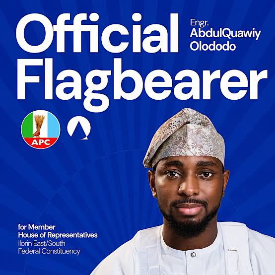
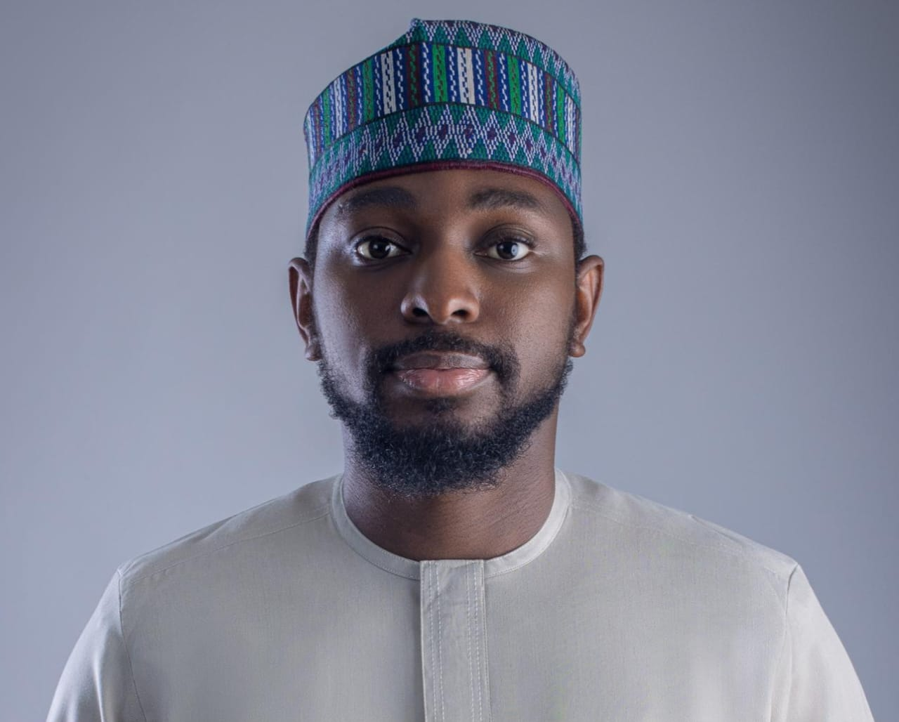
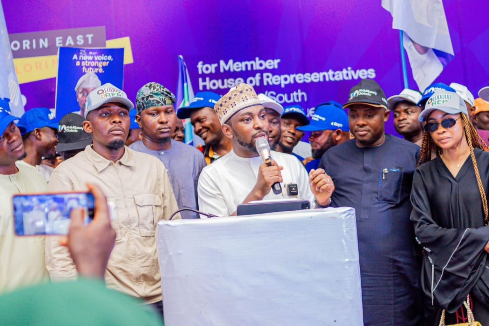
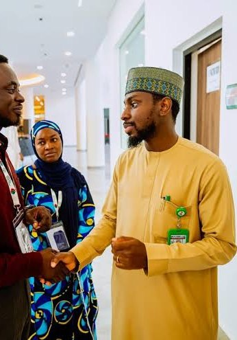
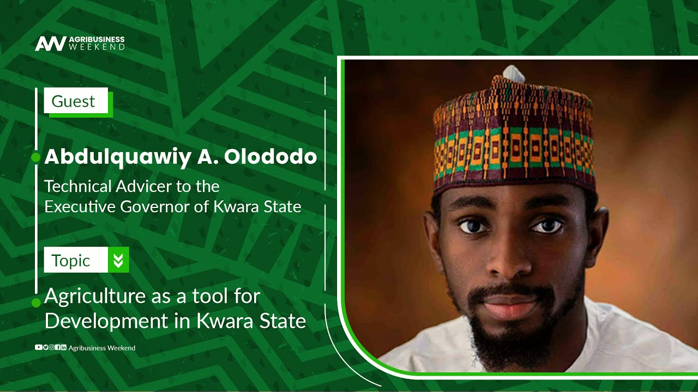
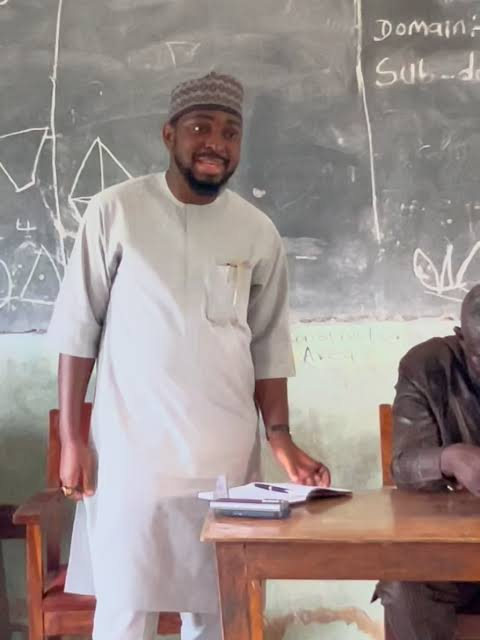
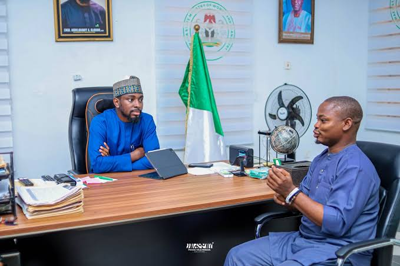
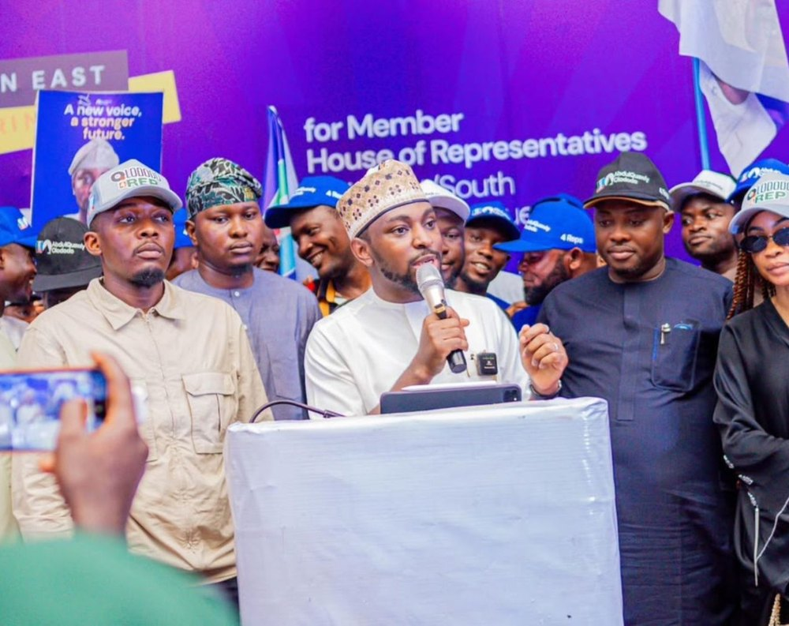
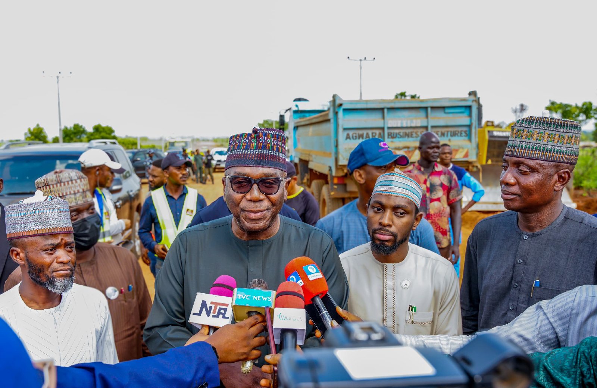

Candidate, House of Representatives
Ilorin East / Ilorin South Federal Constituency · 2027
An engineer who builds. An entrepreneur who creates opportunity. A public servant with a record you can check. Now, a voice for Ilorin East and Ilorin South.


Engr. Abdulquawiy Abdulganiyu Olododo is a proud son of Ibagun Ward, Ilorin East. He holds a degree in Electrical and Computer Engineering from Kwara State University and an MBA from the University of East London, and is COREN-certified.
He started in enterprise, then carried that drive into public service as Technical Adviser to the Executive Governor of Kwara State and across agriculture, social investment, solid minerals and infrastructure.
Electrical and Computer Engineering at Kwara State University, then an MBA at the University of East London.
Chose business as his first path to national development, helping young people secure farmland and reach markets.
Opened access to grants and loans so entrepreneurs could scale their businesses.
Joined the Kwara State Executive Council as Commissioner, later acting for Works and Transport.
Led the works ministry, drove road and flyover inspections and earned COREN certification in 2024.
Stepping forward as the APC candidate to bring federal dividends to every ward of the constituency.
Interlocking access roads across Ilorin, including routes to the homes of traditional title holders.

Part of the Kwapreneur, Owo-Isowo, women's and widows' and artisan support drive.

Contributed to implementation and helped youths secure farmland and sell their produce.

Learning materials for outstanding students across Ilorin East and South.

Guided by respected figures in politics and communities across the constituency.
Skills, farmland and funding access that turn ambition into income.
*Figures refer to the Kwara State programmes of Governor AbdulRahman AbdulRazaq's administration, in which he served.
Attract jobs and open real pathways to better income.
Connect entrepreneurs to Bank of Industry, NIRSAL and CBN SME facilities.
Support learners so our students become the standard others look to.
Apply hands-on works experience to roads and community access.
Land access and routes to market for young farmers.
Accessible, accountable and working hand in hand with the people.


Volunteer, share an idea or invite Hon. Olododo to your community.